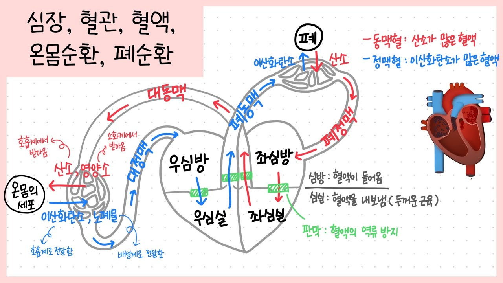
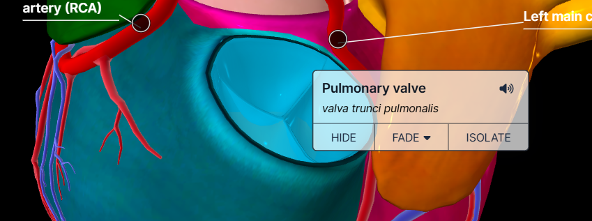
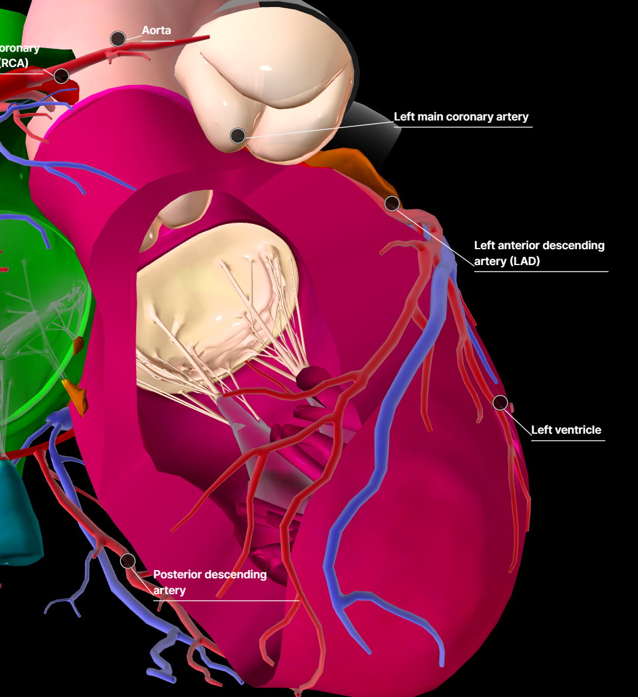
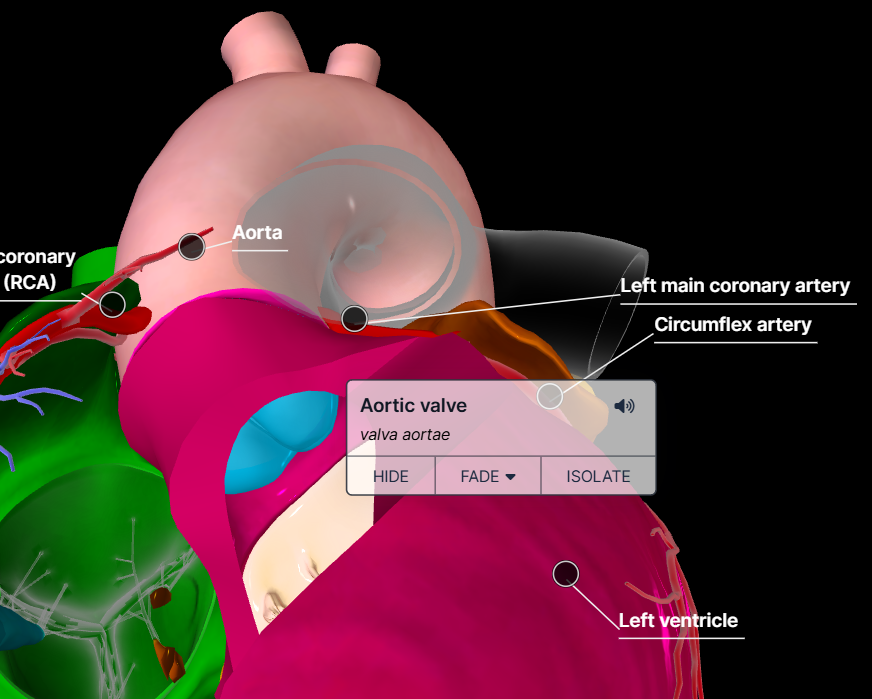

이번 블로그에서는
심장의 혈액순환에 대해서
자세하게 알아보자.
심장의 혈액 유동의 간략한 순서는 중학교 과학시간에 배웠었다.

이제 성장했으니,
입체적으로 살펴보자.
(3D geometry를 볼 수 있는 웹사이트)
https://human.biodigital.com/viewer/?be=3a9S&ui-info=true&ui-search=true&ui-reset=true&ui-fullscreen=true&ui-nav=true&ui-tools=true&ui-help=true&ui-chapter-list=false&ui-label-list=true&ui-anatomy-descriptions=false&ui-tutorial=false&disable-scroll=false&uaid=5pm6A
Human Anatomy and Disease in Interactive 3D | BioDigital Human Platform
human.biodigital.com
Right Ventricle(우심실) 에서 분석을 시작해보자.
우심실에서 이산화탄소 농도가 높은 혈액은
Pulmonary trunk(폐동맥)
을 거쳐
폐
로 전달된다.

중요한 것은 여기서 혈액이 역류 하지않도록,
폐동맥 -> 우심실로 혈액이 이동하지 않도록
Pulmonary Valve
가 존재한다.

이후, 폐에서 다시 fresh한 산소 농도가 높은 혈액이
주황색의
Left Atrium(좌심방)
으로 들어가고,
이후,
Left Ventricle(좌심실)
로 이동한다.

여기서, Right ventricle을 벗겨서 Left Ventricle안을 직접 들여봐보자.

보시는 것처럼 안쪽에 거대한 막(Mitral valve)가 존재하고,
여러개의 가느다란 근육섬유로 Left Ventricle벽면과 이어져 있음을 알 수 있다.
참고로 Left ventricle이 가장 근육이 발달되어이 있고,
이는 막의 사이즈만 봐도 알 수 있다.
이후, Left ventricle에서 Aorta(대동맥)으로 혈액이 이동하고,
그 사이에 당연히 역류 방지를 위한 Aorta Valve가 존재한다.

Aorta 에서 나온 혈액은
지난 포스터에서 언급했다 싶이,
뇌, 온몸 전체 로 산소가 가득든 혈액을 공급해준다.

하지만, 그 전에 심장자체의 근육(특히 거대한 좌심실)에도
산소를 공급해주어야 하기 때문에,
Aorta에서 심장으로 혈액을 공급해주는 혈관이
Coronary Artery(관상동맥)
이다.
(관상동맥은 다음블로그에서 자세하게...)
Aorta에서 온몸으로 혈액이 돌고,
Vena Cava(대정맥)
을 통해
Right Artrium(우심방)_초록색부분
으로 혈액이 들어온다.
Back view of heart.

이후에, 당연히
처음 순환의 시작이었던
Right ventricle 로 혈액이 이동하게 되며
혈액 순환의 고리를 계속해서 이어간다.